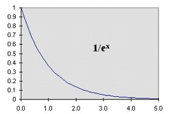

| Feature Article - July 2000 |
| by Do-While Jones |
Let's start out with carbon 14 dating because it is the easiest to explain. Once you know how carbon 14 dating works, then we can move on to heavier element radioactive dating and isochron dating next month.
Carbon 14 dating depends on the half-life of carbon 14. Before we can talk about its half-life, we need to understand its "whole" life. We need to understand how carbon 14 is "born," and how it "dies."
Most nitrogen atoms have seven protons and seven neutrons, so their atomic mass is 7 + 7 = 14. The fact that it has seven protons is what makes it nitrogen.
Carbon 14 is produced in the upper atmosphere.
| The earth's atmosphere is made up of nitrogen (78 percent), oxygen (21 percent), argon (0.9 percent), carbon dioxide (0.03 percent), varying amounts of water vapor, and trace amounts of hydrogen, ozone, methane, carbon monoxide, helium, neon, krypton, and xenon. 1 |
Cosmic radiation strikes the atmosphere all the time. Every once in a while, a negatively charged electron strikes one of the positively charged protons in a nitrogen atom. The positive and negative charges cancel out, turning the proton into a neutron. The electron is so light compared to a proton or a neutron that it doesn't change the weight of the proton. So, this nitrogen atom that used to have seven protons and seven neutrons now has six protons and eight neutrons and still has 14 atomic mass units (6 + 8 = 14). Since it has six protons, it is no longer nitrogen. It is carbon. Specifically, it is 14C.
So, the production of 14C is the result of a random collision between an electron from space and a nitrogen atom in the atmosphere.
The amount of nitrogen in the atmosphere is effectively constant. Yes, the conversion of a nitrogen atom to a carbon atom does decrease the total number of nitrogen atoms, but it makes about as much difference as removing a teaspoon of water from the Pacific Ocean. Remember, all the carbon in the entire atmosphere makes up less than 0.03% of all the atoms in the atmosphere. And 14C is rare compared to 12C. (We were unable to find a reference in the literature that gives the ratio of carbon 14 to carbon 12, but we can estimate it from the atomic mass number. The atomic mass of carbon is 12.01115. If we neglect 13C, we can say that 14 * X + 12*(1-X) = 12.01115. Solving for X tells us that 14C accounts for less than 0.6% of all carbon.) So, the amount of nitrogen in the air is not appreciably decreased when 0.6% of 0.03% (that is, 0.00018%) is converted to 14C.
We have to assume that the average amount of radiation striking the atmosphere is constant, at least over a period of thousands of years. Our justification for that assumption is that most of the radiation comes from the sun, and the sun has been shining with apparently constant brightness for the last few thousand years of human history. Although sunspots might cause daily fluctuations in radiation that increase and decrease every 11 years or so, over centuries, the average amount of radiation remains the same.
If the amount of nitrogen in the atmosphere stays the same, and the amount of cosmic radiation stays the same, 14C will be produced at a steady rate. If the atmosphere started out with absolutely no 14C, there would be a certain amount after one year of exposure of nitrogen to cosmic radiation. After two years, there would be twice as much 14C. The "birth rate" is constant.
One can't predict exactly when a particular 14C atom will emit an electron and turn into 14N, but the statistics are very predictable. Given a large number of 14C atoms, we can say with a high degree of confidence that half of them will turn into 14N in 5,730 years. This is called the "half-life" because half of the 14C will disappear in that time. At the end of that time, half of the remaining 14C will turn into 14N in another 5,730 years.
The half-life is a convenient concept for getting a general feel for how fast radioactive elements decay, but it isn't very convenient for calculating the amount left after an arbitrary period of time. In other words, if we know how many 14C atoms we have right now, we can tell how many we will have in 5,730 years or 11,460 years, but how much will be left in 2,000 years? We need an equation that tells us how much is left at any particular time, not just multiples of the half-life.
 |
It turns out that the equation we need takes the form of 1/ex, where "e" is a number very much like pi. Like pi, e cannot be written exactly in decimal form. The value of e is approximately 2.71828. Like pi, it is one of those numbers that pops up all by itself in nature. By that we mean that whenever you have an equation that has to do with circles or spheres (circumference, area, or volume) the value pi is bound to figure into the equation somehow. Similarly, e is the number that is always involved when computing "natural response." Whether you are computing the motion of a mass on a spring, water flowing out of the hole in a bucket, the voltage of a discharging capacitor, or radioactive decay, the number e appears in the equation. |
A more convenient way to write 1/ex is e-x. Furthermore, it is generally useful to substitute t/T for x, where T is the "time constant". For 14C, the amount of 14C left after t years is Ae-t/T where A is the amount of 14C you had to begin with, t is the time in years, and T is the time constant. If we assume that the percentage of 14C in the air when the thing died was the same as it is today, we can divide by the value today to eliminate the constant A. This leaves us with e-t/T. The value of T that makes e-t/T come out to 0.5 when t = 5,730 years is 8,267 years.
Let's suppose we want to use 14C dating to determine when Abraham Lincoln died. We could dig up his casket and take a sample of the wood from it. If the tree that made the casket was cut down 135 years ago, the ratio of 14C to 12C in that wood sample divided by the ratio of 14C to 12C in the air today should be 0.983803. But suppose our equipment for measuring the ratio is only accurate to 0.1% (full scale). Then our measurement could be off by one digit in the third decimal place. In other words, our measured ratio might be 0.982803 to 0.984803 because of the limited accuracy of our equipment. Plugging these two ratios into the equation that converts the 14C ratio to time (t = -8267 * ln(ratio)) yields 143.4 and 126.6 years ago. Those two 8.4 year errors are 6.2% of the correct value. So, a 0.1% error in the measurement produces a 6.2% error in the result.
Let's try the same experiment on King Tut's coffin. He died in 1325 BC so the wood in his coffin should be about 3,325 years old. The normalized 14C ratio should be 0.668846. But if the measurement is only accurate to 3 decimal places, it might be 0.667846 to 0.669864. This would yield dates from 3,312 to 3,337 years ago. That is an error of 12 years, which is only 0.4% off from the correct value. The absolute error (12 years) is larger than the absolute error for Abe's casket (8.6 years), but when you are talking about 3,325 years, what's 12 years, more or less? Carbon 14 works well for dating things that died a few thousand years ago.
When the time since death gets very large, the slope of the curve gets very flat. This results in very large errors. Suppose one found a piece of wood from a tree that was cut down 50,000 years ago. Its normalized 14C ratio should be 0.002362. A 0.1% error in measurement (0.001362 to 0.003362) yields ages of 47,082 to 54,551 years. That's an error of -2,918 years (which is -5.8%) to +4,551 years (which is +9.1%).
Remember that the ratio of 14C to 12C is about 0.6% today. If you multiply 0.6% by 0.002, you are trying to measure the amount of 14C when it is only 0.0012% of the total sample. So, even a small amount of contamination will corrupt the results. That's why 50,000 years is the theoretical limit generally mentioned in the scientific literature.
Animals eat plants to get the sugar they need to survive. Since 0.6% of the carbon they get from sugar is 14C, about 0.6% of the carbon in their muscles, bones, fat, etc. will be 14C.
When a plant or animal dies, it stops acquiring new carbon atoms. The wooden boards used to make King Tut's coffin aren't acquiring any more carbon of any kind today. But the 14C in those boards is slowly decaying into nitrogen. So, when a scientist takes a sample of King Tut's coffin and measures the ratio of 14C to 12C, the ratio will be lower because about 33% of the 14C atoms in it have turned into 14N.
If the amount of nitrogen in the atmosphere remains constant, and the amount of radiation remains constant, then the production of 14C in the upper atmosphere will remain constant. If the decay rate of 14C is constant, then the amount of 14C in the atmosphere will reach equilibrium in five time constants. Since the time constant of 14C decay is 8,267 years, the concentration of 14C will stabilize after 41,335 years. If there is more 14C, it will decay faster than it is produced and the amount of 14C in the air will decrease. If there is less 14C, then it will decay slower than it is produced and the amount of 14C in the air will increase. At equilibrium, the decay rate (which depends on the amount of 14C in the air) exactly matches the production rate (which is constant).
Suppose an asteroid struck the Earth 65 million years ago. It could have altered the amount of carbon or nitrogen in the air somehow. But even if it did, 41,335 years later the ratio of 14C to 12C would have reached a new equilibrium, and it would be the same today.
Suppose there had been a major atmospheric disturbance, such as the one described in the flood myths of many diverse cultures about 4,000 years ago. That's roughly one-half of the 8,267 year 14C decay time constant, so the ratio of 14C to 12C would still be changing today.
There's no doubt in the scientific world that the 14C ratio was different a few thousand years ago than it is today. That's why 14C dates have to be "calibrated".
The visitor center at the Ancient Bristlecone Pine Forest (about 140 miles north of Ridgecrest on U.S. 395) has a display that tells how 14C dates are calibrated using bristlecone pine tree rings.
I was surprised when I saw an actual bristlecone core sample. It was not much thicker than the lead in a No. 2 pencil, and it looked like a core taken out of a roll of toilet paper. The tree rings were paper thin, and they all looked almost identical. They certainly didn't have definite wide and narrow bands like grocery store bar codes. The differences in the rings were subtle, to say the least.
Scientists (with better eyesight and more patience than I have) counted thousands of these tiny rings. Then, assuming that the tree only produced one ring per year, they determined how old the tree was when it died. By correlating its youngest rings with rings of living trees, they determined the year when the tree died and (presumably) knew how long it had been since each ring died. When they used 14C dating on the oldest rings, they didn't get the same age as they got from the number of rings. They believed the rings rather than the carbon 14 measurement! So, they used fudge factors (which they call "calibration") to "correct" the 14C date.
| The theory of 14C calibration is relatively straighforward: naturally occurring materials that exhibit annual growth phenomena (e.g., tree rings, lake and marine varves) are 14C-dated as precisely as possible over age ranges that can (ideally) be dated absolutely. The resulting calibration curve shows the relation between conventional 14C dates and calendar ages, its trends and "wiggles" reflecting the variation over time of 14C in the geosphere. Once generated, the calibration curves (or more accurately, their underlying data sets) enable the conversion of a date in radiocarbon years (BP) to a calendar age range or ranges (cal BC/AD). 2 |
Many fanciful and imaginative explanations are offered to try to reconcile 14C dates with other dates. Here is one very recent example.
| Marine radiocarbon (14C) dates are widely used for dating oceanic events and as tracers of ocean circulation, essential components for understanding ocean-climate interactions. Past ocean ventilation rates have been determined by the difference between radiocarbon ages of deep-water and surface-water reservoirs, but the apparent age of surface waters (currently ~400 years in the tropics and ~1,200 years in Antarctic waters) might not be constant through time, as has been assumed in radiocarbon chronologies and palaeoclimate studies. Here we present independent estimates of surface-water and deep-water reservoir ages in the New Zealand region since the last glacial period, using volcanic ejecta (tephras) deposited in both marine and terrestrial sediments as stratigraphic markers. Compared to present-day values, surface-reservoir ages from 11,900 14C years ago were twice as large (800 years) and during glacial times were five times as large (2,000 years), contradicting the assumption of constant surface age. Furthermore, the ages of glacial deep-water reservoirs were much older (3,000-5,000 years). The increase in surface-to-deep water age differences in the glacial Southern Ocean suggests that there was decreased ocean ventilation during this period. 3 |
Apparently, if the 14C date isn't what it is supposed to be, one can adjust it for any imaginable reason--as long as one doesn't imagine a global flood.
Unfortunately, we have run out of space and time. We will have to continue this essay next month.
| Quick links to | |
|---|---|
| Science Against Evolution Home Page |
Back issues of Disclosure (our newsletter) |
| Web Site of the Month |
Topical Index |
Footnotes:
1
Encarta® 98, "Atmosphere"
(Ev)
2
Radiocarbon, Vol. 40, No. 3, 1998, P. xi, "A Note for Novices" www.radiocarbon.org/Journal/v40n3/note.html
(Ev)
3
Nature Vol. 405, 1 June 2000, "Old radiocarbon ages in the southwest Pacific Ocean during the last glacial period and deglaciation" pages 555 - 559 https://www.nature.com/articles/35014581
(Ev)